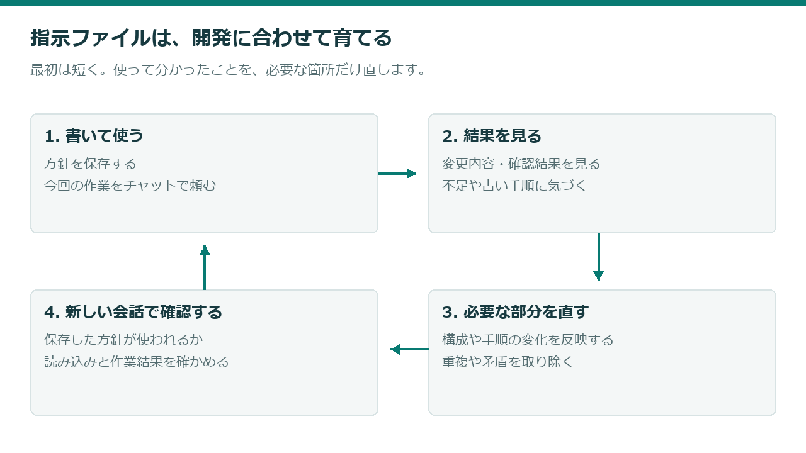

変わったとき、困ったときに見直す
- 起動・テスト・ビルドの方法が変わった。
- フォルダ構成や使う技術が変わった。
- チームの方針が決まった、または変わった。
- 同じ説明や修正依頼を何度も繰り返している。
毎回の作業前に、全体を書き直す必要はありません。小さな変化なら、その項目だけ直します。古い記述を消すことも更新の一つです。


/initは、毎回使うコマンドではない
/initは、プロジェクトを調べて初期案を作るためのコマンドです。ファイルの中身は後から編集できるので、更新のたびに/initを実行する必要はありません。
Claude Codeでは、既存のCLAUDE.mdがある場合、/initは改善を提案します。Codexの公式資料は雛形作成を案内していますが、既存ファイルの扱いを同じ動作だと決めつけず、更新には次のような文章での依頼を使います。
手書きで始めたあと、プロジェクトの構成や確認手順が整った段階で、全体を見直してもらうのもよいタイミングです。
まず、変更案を出してもらう
現在のファイルとプロジェクトの構成を調べてもらい、変更する前に提案を確認します。使うファイル名だけを残して、AIに送ってください。
このプロジェクトのAGENTS.md / CLAUDE.mdを、現在のコードと照合して見直してください。
- 古いパス・実行できないコマンド・矛盾した方針を挙げてください。
- 今後も繰り返し必要になる項目だけを残してください。
- 提案ごとに、変更する理由を説明してください。
- まだファイルは変更せず、変更案を提示してください。提案を確認してから、採用する変更を指定して反映を頼みます。保存したら、新しい会話で読み込みと動作を確認します。
基本の使い方は、ここまで
役割を知り、ファイルを用意して書き、AIに依頼して確かめ、必要なら更新する。この流れを使えれば、基本の使い方を身につけられます。
次の07〜08では、指示を適用する範囲を学びます。07では個人用とプロジェクト用の配置を整理し、08では一部のフォルダだけに適用する方針の書き方を学びます。09以降は、内容の整理やツールの併用など、運用を深める内容です。
ここで覚えておくこと
指示ファイルは、短く始め、使って確かめ、開発に合わせて育てられます。
このページの公式資料
仕様確認：2026年10月4日。操作の補足は主にローカルの開発環境を対象にしています。
次は、自分の全プロジェクトで共通の方針を使いたくなったときの配置を学びます。